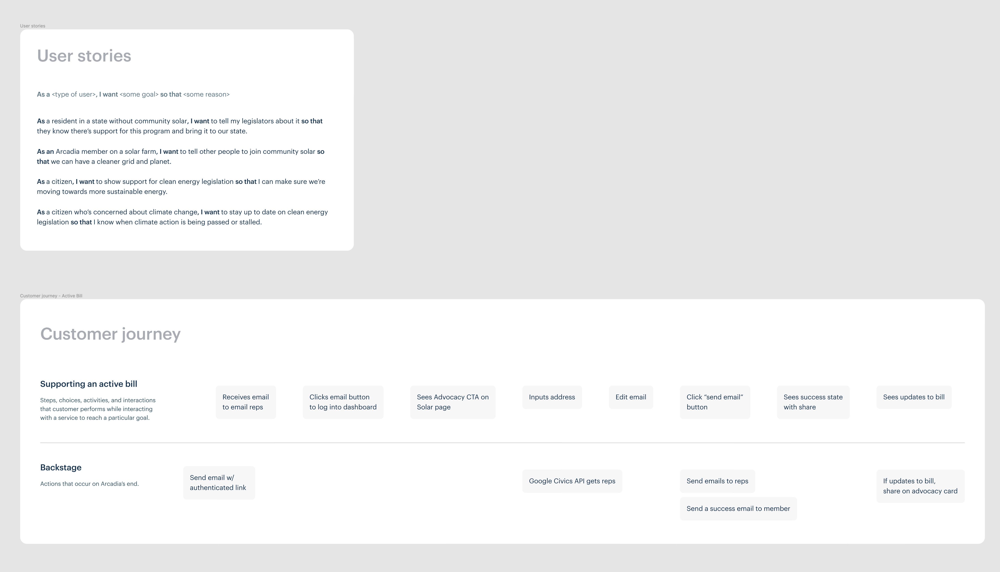
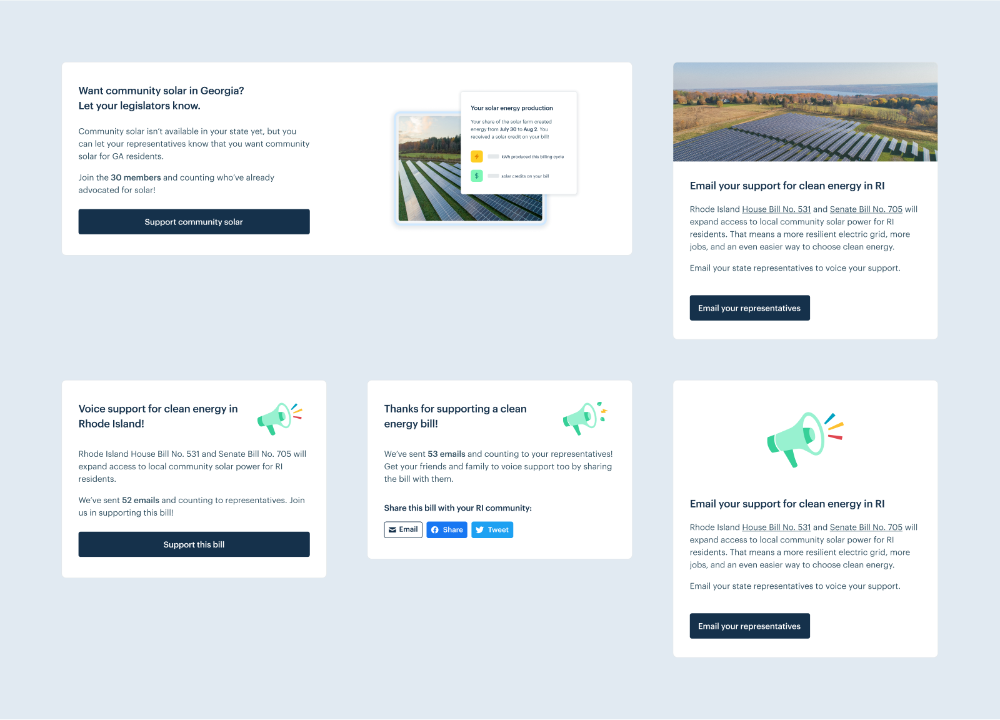
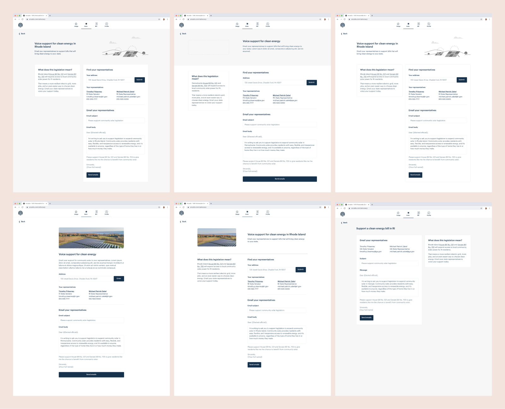
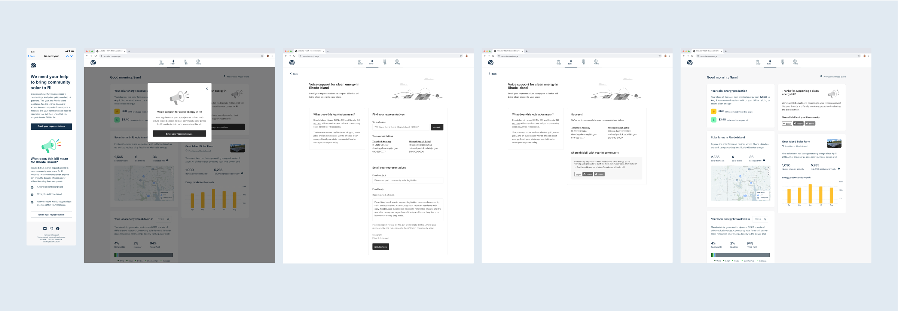
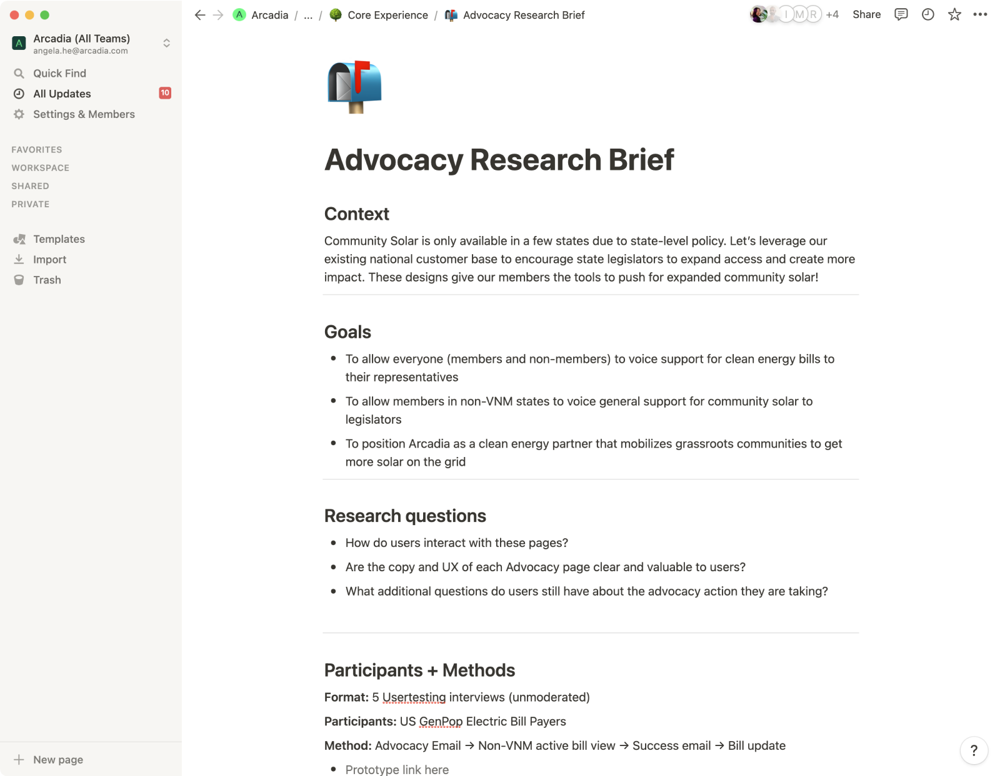
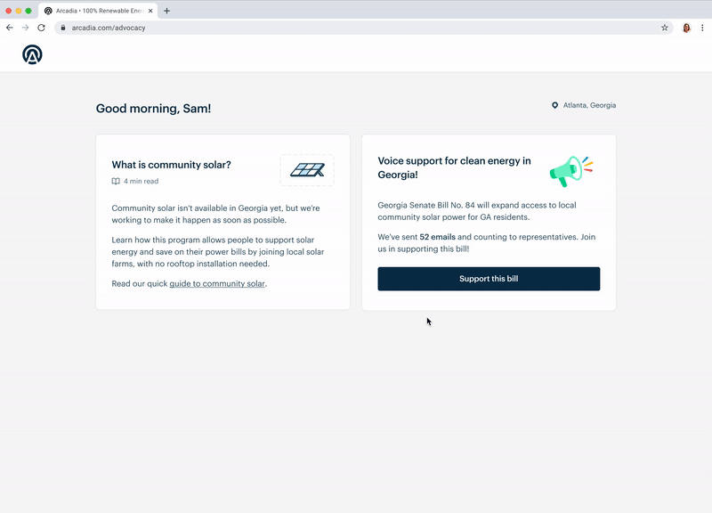

|
Arcadia — Advocacy Tool I designed a tool to allow our members to voice their support for clean energy bills to their state representatives. 
Overview Community solar, a program that allows people to support solar energy without installing their own panels, is only available in specific states due to state-level policy. In the past, Arcadia would run ad-hoc email campaigns to allow our members to tell their representatives to support solar legislation, and now we wanted a tool to more easily spin up campaigns whenever solar legislation arose — in short, to leverage our national customer base to push state legislators to expand solar access! Goals We had an existing proof-of-concept from a hackathon project; it sent customers an email to support a solar bill and linked to their Arcadia dashboard, where they could email their representatives with one click. We wanted to improve this user flow, integrate it into the dashboard, and make it scalable to handle multiple campaigns across different states. Brainstorming After kicking off the project with the product manager and engineering manager, I started exploring user stories and a customer journey. I also began sketching where the advocacy flow would live in the dashboard.
 User stories and customer journey  Sketches for different customer experiences and a modular flow Wireframes Initial designs explored:
 Initial designs for an advocacy module
 Initial wireframes for an advocacy form
 Medium fidelity designs for the flow to email representatives User testing After a few rounds of stakeholder feedback and design iteration, I conducted user tests on Usertesting.com to see how people interacted with the designs, determine if the copy and UX were clear, and see if there was anything confusing about the flow.
 User testing brief & script Final designs User testing revealed that the advocacy flow was straightforward to use and got the job done with sending emails to a customer's representatives. It also revealed that we could better communicate details about the active legislation and community solar in the initial email and dashboard copy.
 Looping gif of the advocacy flow (for states without community solar) Impact and aftermath Since launching, the advocacy feature has been used to progress community solar legislation in a handful of states, including California and New Mexico. The policy team is easily able to use the tool to spin up a new campaign (~1 day turnaround time!) for Arcadia members in specific states to email their representatives on behalf of active community solar policy. |
I’m a product designer who has worked on customer-facing web apps, internal tools, and media products. I'm excited about tech & design for social and sustainable impact.
Currently a senior product designer at Arcadia 🌱